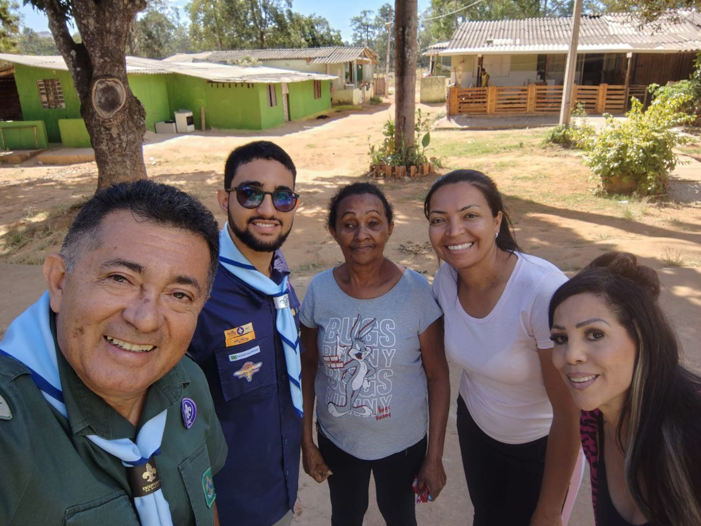
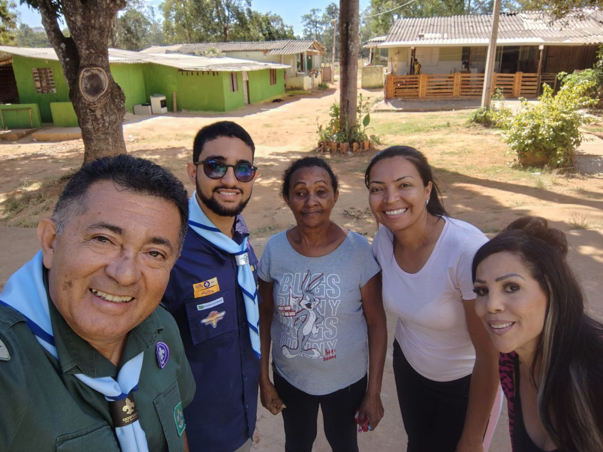
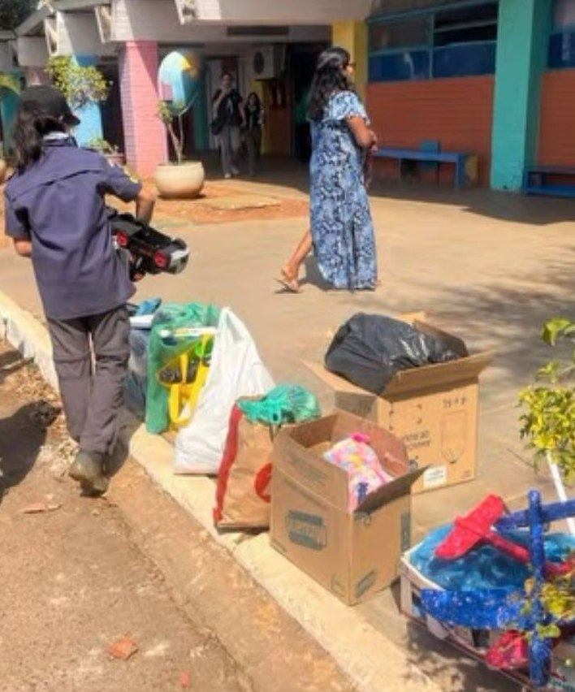
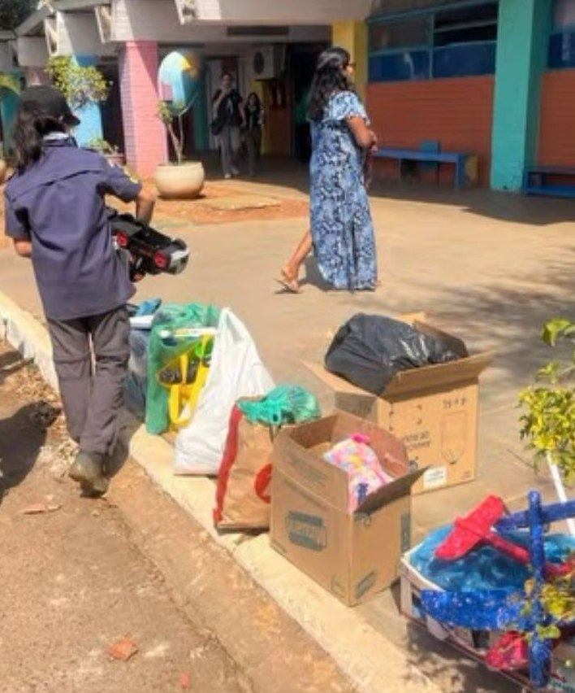

Mutirão Verde
A Jornada do Reflorestamento
Reflorestar áreas degradadas e promover a consciência ecológica na vizinhança através da ação prática e contínua. Uma iniciativa que une aprendizado técnico e serviço comunitário.


Nossos projetos transformam realidades e formam cidadãos.
Reflorestar áreas degradadas e promover a consciência ecológica na vizinhança através da ação prática e contínua. Uma iniciativa que une aprendizado técnico e serviço comunitário.
Coleta e distribuição de produtos de higiene para famílias em vulnerabilidade na região do Riacho Fundo. Uma ação direta para levar dignidade e cuidado a quem mais precisa.
 



Apoiar uma ONG local fornecendo itens essenciais de higiene pessoal.
Nossa alcateia se mobilizou para levar a magia do Natal a crianças de uma creche carente. Os lobinhos arrecadaram, limparam e embalaram brinquedos, garantindo que cada criança recebesse um presente especial e um gesto de carinho nesta data tão significativa.
 
